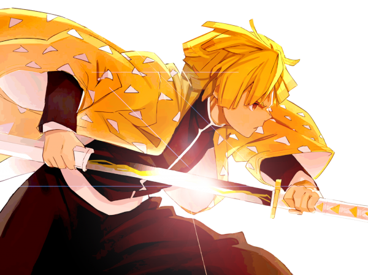

abaixo você vai ver uma imagem que está na mesma pasta.

podemos também carregar imagens que estão em sub-pastas

podemos também carregar imagens externas
olha o favicon aqui em cima
para isso precisamos apenas usar a tag link:favicon em cima do title na parte head